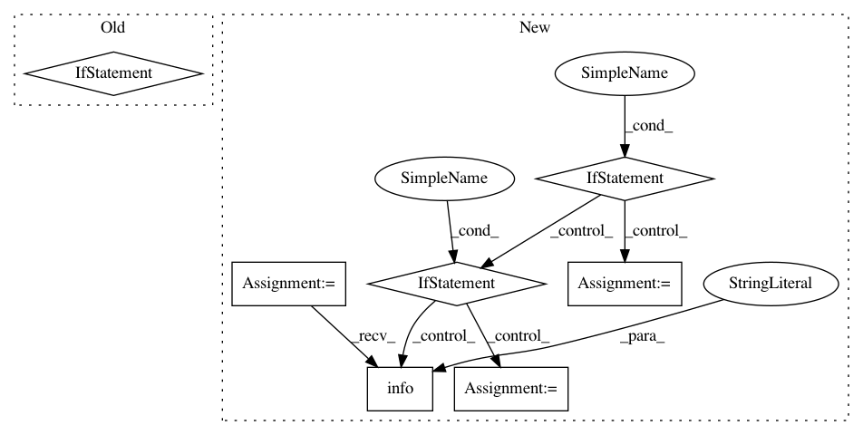

2dc2c2564c24dc67d1b997a0e45674d85b43abb3,hyperspy/learn/mva.py,MVA,plot_explained_variance_ratio,#MVA#Any#Any#Any#Any#Any#Any#Any#Any#Any#Any#,924
Before Change
s = self.get_explained_variance_ratio()
if n is None:
n = len(self.learning_results.explained_variance_ratio)
// Determine right number of components for signal and cutoff value
if isinstance(threshold, float):
if not 0 < threshold < 1:
raise ValueError("Variance threshold should be between 0 and"
" 1")
After Change
s = self.get_explained_variance_ratio()
n_max = len(self.learning_results.explained_variance_ratio)
if n is None:
n = n_max
elif n > n_max:
_logger.info("n is too large, setting n to its maximal value.")
n = n_max
// Determine right number of components for signal and cutoff value
if isinstance(threshold, float):
if not 0 < threshold < 1:
raise ValueError("Variance threshold should be between 0 and"
" 1")
In pattern: SUPERPATTERN
Frequency: 3
Non-data size: 7
Instances
Project Name: hyperspy/hyperspy
Commit Name: 2dc2c2564c24dc67d1b997a0e45674d85b43abb3
Time: 2017-02-22
Author: eric.prestat@gmail.com
File Name: hyperspy/learn/mva.py
Class Name: MVA
Method Name: plot_explained_variance_ratio
Project Name: Microsoft/nni
Commit Name: 41e587038a32db002178329a64224ea6a5b2a5f9
Time: 2019-09-15
Author: 40699903+liuzhe-lz@users.noreply.github.com
File Name: src/sdk/pynni/nni/msg_dispatcher.py
Class Name: MsgDispatcher
Method Name: _handle_final_metric_data
Project Name: hyperspy/hyperspy
Commit Name: f71b3640ef54d6ef89818ade8b5b9505e72962bb
Time: 2020-09-01
Author: alexander.skorikov@gmail.com
File Name: hyperspy/_signals/eds.py
Class Name: EDS_mixin
Method Name: sum